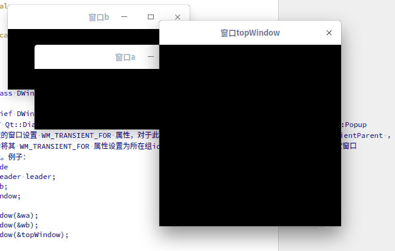

DWindowGroupLeader Class
class Dtk::Gui::DWindowGroupLeaderDWindowGroupLeader 用于设置窗口所在的组，可以把多个窗口加到同一个组. More...
| Header: | #include <DWindowGroupLeader> |
Public Functions
| ~DWindowGroupLeader() | |
| void | addWindow(QWindow *window) |
| int | clientLeaderId() const |
| int | groupLeaderId() const |
| void | removeWindow(QWindow *window) |
Detailed Description
在dxcb平台上，所有未指定组的窗口都会被分配到 DWindowGroupLeader::clientLeaderId 这个组，且在窗口对应的本地窗口被创建时，会对 Qt::Dialog、Qt::Sheet、Qt::Tool、 Qt::SplashScreen、Qt::ToolTip、Qt::Drawer、Qt::Popup 类型的窗口设置 WM_TRANSIENT_FOR 属性，对于此类型的窗口，如果没有手动调用 QWindow::setTransientParent ， 则会将其 WM_TRANSIENT_FOR 属性设置为所在组id，得到的效果就是：会保证此窗口显示到这个组所有其它窗口 之上。例子：
DWindowGroupLeader leader; QWindow wa, wb; QWindow topWindow; leader.addWindow(&wa); leader.addWindow(&wb); leader.addWindow(&topWindow); wa.setTitle("窗口wa"); wa.resize(300, 100); wa.show(); wb.setTitle("窗口wb"); wb.resize(300, 100); wb.show(); topWindow.setTitle("窗口topWindow"); topWindow.setFlag(Qt::Dialog); topWindow.resize(300, 300); topWindow.show();
窗口topWindow一直处于窗口wa和wb上层

如果一个组内同时存在多个未设置过 QWindow::setTransientParent 的 Qt::Dialog（其它会自动设置 WM_TRANSIENT_FOR 属性的窗口也成立）类型的窗口，这些窗口之间不会互相影响显示顺序，具体的规则和 X11 ICCCM 标准一致。 https://tronche.com/gui/x/icccm/sec-4.html#WM_TRANSIENT_FOR
See also DWindowGroupLeader::clientLeaderId and Dtk::Widget::DApplication::loadDXcbPlugin.
Member Function Documentation
DWindowGroupLeader::~DWindowGroupLeader()
DWindowGroupLeader::~DWindowGroupLeader 对象销毁时会释放由自己自动创建的 groupLeaderId
See also DWindowGroupLeader::groupLeaderId.
void DWindowGroupLeader::addWindow(QWindow *window)
DWindowGroupLeader::addWindow 将窗口添加到这个组 window
Warning: 每个窗口只能有一个组，添加到新的组时，将不再受旧的组所带来的任何影响
int DWindowGroupLeader::clientLeaderId() const
DWindowGroupLeader::clientLeaderId Returns 返回应用程序默认的组id
int DWindowGroupLeader::groupLeaderId() const
DWindowGroupLeader::groupLeaderId Returns 返回组的id，类似于 QWindow::winId
Warning: 如果没有一个有效的id，则会先创建一个新的组id
void DWindowGroupLeader::removeWindow(QWindow *window)
DWindowGroupLeader::removeWindow 将窗口从这个组中移除 window
Warning: 窗口被移除后将不再受此组带来的任何影响